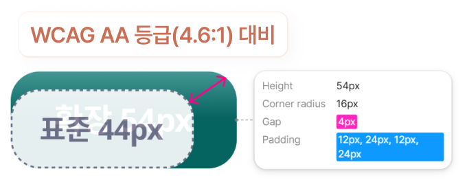
접근성 우선 설계
장애인 사용자가 실수 없는 사용을 돕는 UI
장애인 근로자와 비장애인 관리자 모두를 위한 유연한 시스템의 업무 환경
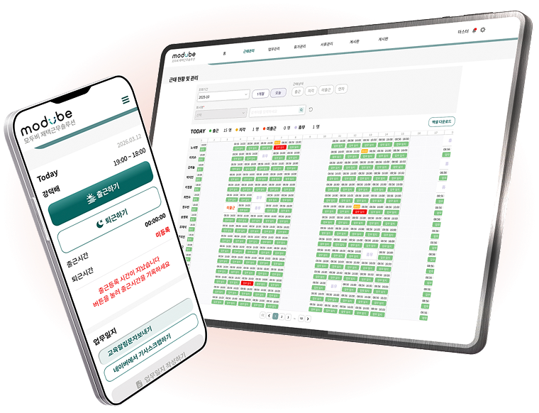
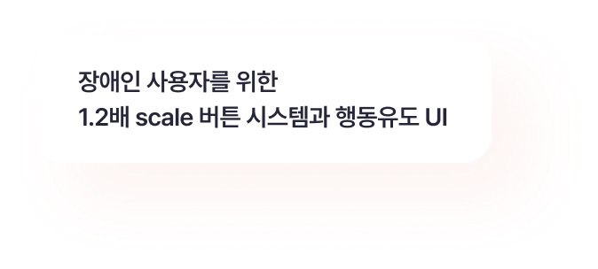
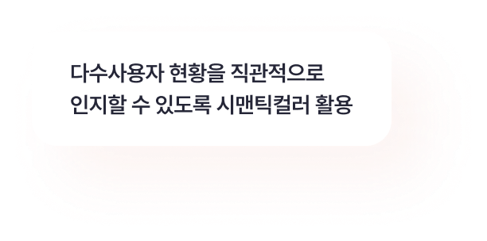


고객사와 장애인 근로자의 페인포인트를 직접 수집하고,
유사 서비스와 비교 분석하여 설계 방향을 도출.
문제점 조사
핵심 니즈 5가지 발굴유사서비스 분석 01
유사서비스 분석 02
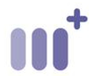
마인드솔루션파편화된 엑셀 데이터를 체계화된 시스템으로 전환하고, 사내 도구를 넘어 외부 판매가 가능한 SaaS 솔루션 제작.

접근성 우선 설계
장애인 사용자가 실수 없는 사용을 돕는 UI
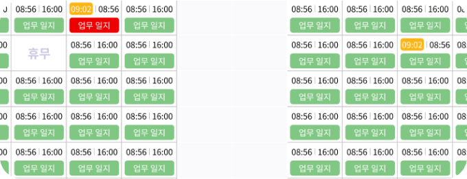
업무 효율성
파편화된 엑셀 데이터를 한 화면에서 해결
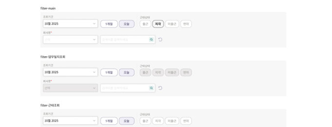
운영 확장성
Atomic 구조를 사용하여 상태 스위칭 컴포넌트 생성

'연결'과 '미소'를 담은 로고를 통해 모두비 브랜드의 사람과 사람의 연결에 대한 따듯한 브랜드 시각 정립.
파비콘, 클리어 스페이스 등 시각적 규격 정립.


브랜드 소개사이트 컬러와 장애인 재택근무 솔루션 컬러 팔레트의 전략적 변주.
[Base tone] 고용담당자에게 희망을 전달하는 밝은 톤
브랜드사이트의 톤은 솔루션보다 밝고 생동감 있게 설정하여, 희망과 따듯한 시각을 보여줌. 장애인 고용 기업 사용자에게 장애인 고용이 가진 긍정적인 에너지와 가능성을 전달하기 위해 밝은 민트 그린을 전면에 사용.
[Solution tone] 장애인 재택근무 솔루션을 위한 변주
근로자와 관리자가 장시간 머무는 모두비솔루션에서는 업무의 집중도와 시스템의 안정감에 중점으로사용자 특성과 사용성을 고려한 컬러 톤 변경.
장애인사용자와 비장애인 관리자의 업무 특성을 고려한 각각의 사용자를 위한 특성 페이지 제작.
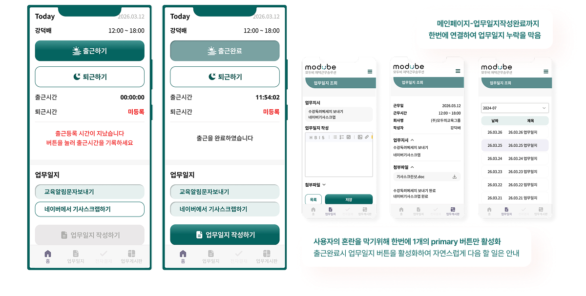
관리자를 위해 댑스를 최소화한 정보설계와 시맨틱컬러를 활용한 직관적인 화면 설계
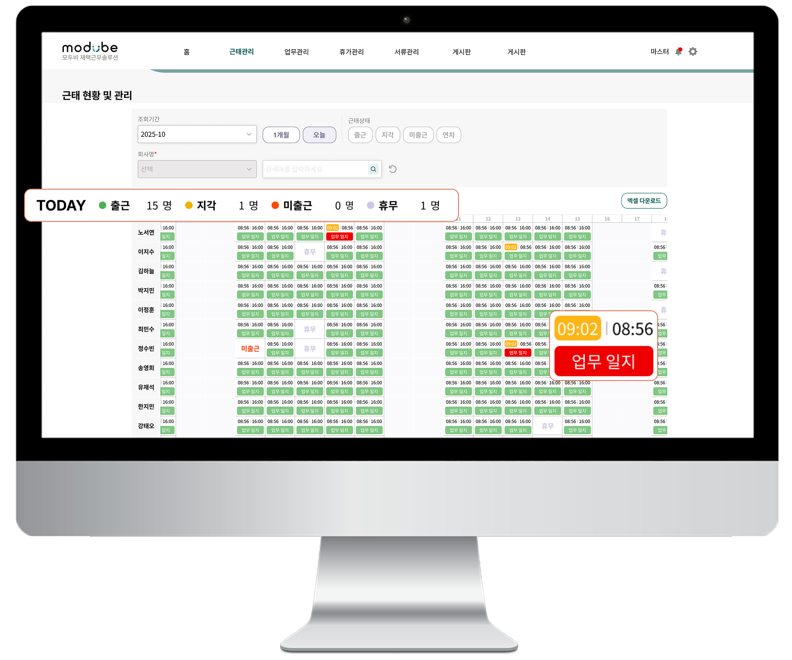
출근현황을 바로 알 수 있는 통계수치 제공
한눈에 문제점을 파악이 가능한 컬러시스템
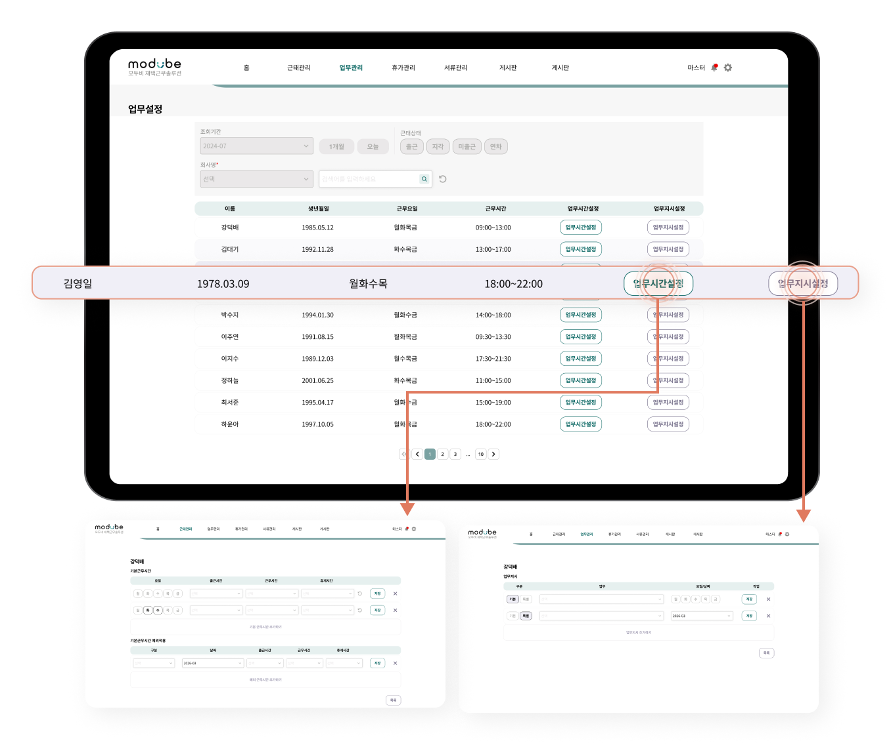
관리자의 주요업무인 설정업무 두가지를
한 페이지에 리스트업하여 댑스 최소화
관리자의 가장 헤비업무인 제출용 서류 생성 시스템과 설정페이지를 효율화하여 업무 편의성을 높힘
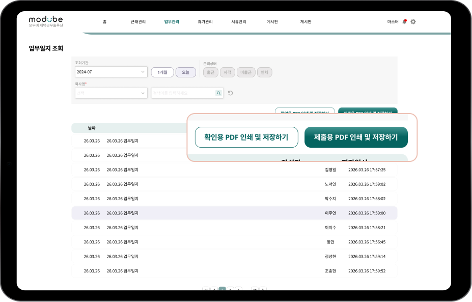
관공서 제출용 서류 생성 시스템 구축
디자인 가이드와 코드의 간극을 줄이기 위해 개발자와 공동으로 BEM 기반의 시맨틱 네이밍 체계를 수립.
cmp-input__has-icon/default

btn_core--hasIcon는 장애인 사용자가 주요 업무에 사용하는 핵심버튼.
아이콘과 함께 강한 대비, 크기를 사용하여
인지 장애 사용자의 판단 시간을 단축.

행동 장애인 사용자를 위해 모든 버튼 크기를 상향 조정하여 표준 규격 대비 터치 허용 범위를 20%~30% 확장. 조작 실패 확률을 낮춰 사용자의 업무 편의성을 높임.
반응형 작업 시 퍼블리셔의 리소스를 줄이기 위해 고정 여백과 변형 여백 혼용 사용.
고정
4, 8, 16 px
변동
pc
40, 80, 120 px
mobile
30, 60, 80 px
타이포 (PC = Mobile 통일)
18px
사용자의 인지를 높이기 위해 18px을 기본으로, 16px을 서브로 사용.
아이콘

28px
형태를 명확하게 식별할 수 있도록 Fill 타입 아이콘을 표준으로 사용.
[장애인 사용자] 확장 스케일 시스템으로 실패확률을 줄여 업무 환경을 개선.
[관리자] 관리자가 한번에 모든 인원의 업무 및 근태 현황을 파악할 수 있도록 4개 파일의 데이터를 단일 페이지로 구조화.
[개발자] 개발자와 함께 BEM 기반 네이밍 체계를 수립하여 디자인과 코드 네이밍을 1:1로 매칭, 디자이너-퍼블리셔-개발자 간의 협업 커뮤니케이션 구축.